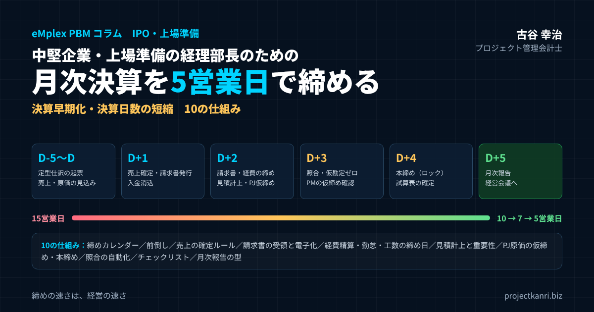

月次決算を5営業日で締める10の仕組み―決算早期化・決算日数短縮のノウハウ。中堅企業・上場準備の経理部長のための締めカレンダー、見積計上、原価確定、照合の自動化、月次報告まで

結論：月次決算の早期化は「経理の努力」ではなく「会社の仕組み」で実現する
この記事の要点
- 原因は経理の外：締めの日数の多くは、請求書・売上確定・経費精算・工数の「情報待ち」
- 逆算：締めカレンダーでD+5から全社の締め切りを決め、社長・CFO名で発信する
- 待たない締め：月末前の前倒しと、重要性の基準に基づく見積計上
- プロジェクト原価：D+2仮締め → PM確認 → D+4本締め（ロック）
- 仕組みで回す：照合の自動化、仮勘定ゼロ、チェックリストとタスク管理、月次報告の型
- 段階的に：15→10→7→5営業日。各段階で3か月安定させてから次へ
プロジェクト管理会計士の古谷です。上場準備中の会社や、これから管理体制を強化したい中堅企業のご支援に入ると、経理部長の方から必ずと言ってよいほど相談されるのが、月次決算の早期化です。「月次の締めに15営業日かかっていて、経営会議に出す数字が翌々月になってしまう」「監査法人から、月次決算をもっと早く締めるように言われている」。そうした声を何度も聞いてきました。
私自身、エンプレックスでCFOとして上場の準備に携わったとき、月次決算の早期化は避けて通れないテーマでした。そして、その過程で痛感したのは、月次決算が遅い原因の大半は、経理部の中ではなく、経理部の外にあるということです。請求書が届かない、経費精算が出てこない、売上の確定の連絡が来ない。経理の担当者がどれほど優秀でも、材料がそろわなければ締めることはできません。
本記事の結論は明確です。月次決算を5営業日で締めるには、経理の作業を速くすることよりも、締めに必要な情報が、決まった日に、決まった形で、経理に集まる仕組みを作ることが先です。そのうえで、月末前にできる作業を前倒しし、重要性の低いものは見積で計上し、照合とチェックを仕組みで回す。この記事では、そのための10の仕組みを、順を追って解説します。
なぜ月次決算の早期化が必要なのか
月次決算を早く締めることには、三つの意味があります。一つ目は、経営の意思決定のスピードです。月次の数字が翌月の第三週にしか出てこなければ、経営は一か月半前の状況をもとに判断することになります。赤字のプロジェクトや、予算から外れ始めた事業への対応が、それだけ遅れます。
二つ目は、上場の準備と、上場後の開示への対応です。上場の準備では、月次で予算と実績を比べて取締役会に報告し、差の原因を説明できる体制が求められます。上場後は、四半期や年度の決算を、決められた期限までに開示しなければなりません。東京証券取引所の考え方では、決算短信は遅くとも期末後45日以内に開示することが適当とされ、30日以内の開示がより望ましいとされています。月次の締めに時間がかかっている会社が、四半期や年度の決算だけを早く締めることはできません。月次決算の早さは、上場会社としての開示の体制の土台です。
三つ目は、経理部の働き方です。月次の締めに10営業日以上かかっている会社では、月の前半が毎月締めの作業に追われ、分析や改善に使える時間がほとんど残りません。締めを5営業日に短縮できれば、経理部は数字を作る部署から、数字を使って経営を支える部署へと変わることができます。
| 観点 | 締めが遅い場合 | 5営業日で締めた場合 |
|---|---|---|
| 経営の意思決定 | 1か月半前の数字で判断 | 翌月の第1週に前月の数字で判断 |
| 上場準備・開示 | 四半期・年度の決算も遅れる | 開示の期限に余裕を持って対応 |
| 経理部の働き方 | 月の前半が締めの作業で埋まる | 分析・改善に時間を使える |
| プロジェクト管理 | 採算の悪化に気づくのが遅い | 翌月の早い時期に手を打てる |
なお、上場の審査で月次決算を何営業日で締めることが求められるか、といった具体的な目安は、会社の規模や業種、主幹事証券会社や監査法人の考え方によって異なります。本記事の5営業日は、中堅企業が目指す一つの水準として掲げています。自社の目標は、関係者と相談して決めてください。
まず現状を診断する：どこで日数がかかっているのか
月次決算の早期化に取り組むとき、最初にやるべきことは、現状の締めの工程を書き出し、どこで日数がかかっているのかを診断することです。いきなりシステムを入れ替えたり、担当者を増やしたりしても、ボトルネックがそこでなければ、日数は短くなりません。
診断の方法は単純です。前月の締めについて、月末から月次決算の確定までの間に、誰が、いつ、何をしていたのかを、日ごとに書き出します。そして、それぞれの作業について、経理部の中の作業なのか、経理部の外からの情報待ちなのかを区別します。
| 工程 | 完了日 | 担い手 | 区分 |
|---|---|---|---|
| 取引先の請求書の到着 | D+8 | 取引先→各部署 | 情報待ち |
| 経費精算の締め | D+7 | 全社員 | 情報待ち |
| 売上の確定の連絡 | D+5 | 営業部 | 情報待ち |
| 工数の入力の完了 | D+6 | 全社員・PM | 情報待ち |
| 仕訳の入力 | D+10 | 経理担当 | 作業 |
| 残高の照合・仮勘定の調査 | D+12 | 経理担当 | 作業（手戻り多い） |
| 上長のチェック・修正 | D+14 | 経理課長 | 作業（手戻り多い） |
| 試算表・月次報告の確定 | D+15 | 経理部長 | 作業 |
Dは月末日、D+nは月末後の第n営業日。数値は例です。
私がご支援してきた会社で、この診断をすると、多くの場合、締めの日数の半分以上が情報待ちの時間であることが分かります。取引先の請求書が月の第二週に届く、営業部が売上の確定を連絡してくるのが第五営業日、経費精算の締め切りが翌月十日。こうした経理部の外の締め切りが、月次決算の日数の下限を決めているのです。
もう一つ、診断で見えてくるのが、手戻りの多さです。売上の計上後に金額の訂正が来る、仮勘定に正体の分からない金額が残っていて調べるのに一日かかる、上長のチェックで誤りが見つかってやり直す。こうした手戻りは、作業の時間そのものよりも、締めの日数を長くする要因になります。診断の段階で、手戻りがどこで、何回起きているのかも記録しておきましょう。
月次決算を5営業日で締める10の仕組み
診断の結果を踏まえて、月次決算を5営業日で締めるための仕組みを作っていきます。私がご支援の現場で効果があったものを、10の仕組みとして整理しました。
| No. | 仕組み | グループ |
|---|---|---|
| 1 | 締めカレンダーでD+5から逆算する | 全体設計 |
| 2 | 月末前にできることは月末前に終える | 全体設計 |
| 3 | 売上の確定ルールを決め、D+1で売上を締める | 情報を集める |
| 4 | 請求書の受領に締め切りを設け、電子化する | 情報を集める |
| 5 | 経費精算・勤怠・工数の締め日を月末にそろえる | 情報を集める |
| 6 | 見積計上と重要性の基準で「待たない締め」にする | 経理の作業 |
| 7 | プロジェクト原価は仮締め・本締めの二段階で確定する | 情報を集める／経理の作業 |
| 8 | 入金消込と残高の照合を自動化し、仮勘定をゼロにする | 経理の作業 |
| 9 | チェックリストとタスク管理で属人化をなくす | 経理の作業 |
| 10 | 月次報告の型を決め、D+5で経営会議に出す | 経理の作業 |
10の仕組みは、大きく三つのグループに分かれます。一つ目は、締めの全体を設計する仕組みで、締めカレンダーと前倒しがこれにあたります。二つ目は、経理部の外から情報を早く、正しく集める仕組みで、売上の確定、請求書の受領、経費精算と勤怠、プロジェクトの原価の確定がこれにあたります。三つ目は、経理部の中の作業を速く、正確にする仕組みで、見積計上、照合の自動化、チェックリストとタスク管理、月次報告の型がこれにあたります。以下、一つずつ解説します。
仕組み1：締めカレンダーで「D+5」から逆算する
一つ目の仕組みは、締めカレンダーです。月末日をDとし、月末の五営業日前からD+5営業日までの間に、誰が、何を、いつまでに終えるのかを、一枚の表にまとめます。月次決算を5営業日で締めるという目標から逆算して、各工程の締め切りを決めるのです。
| 日 | 経理部の外 | 経理部 |
|---|---|---|
| D-5〜D-1 | 月内の発注・検収の登録、工数の毎日入力 | 定型仕訳の起票、売上・原価の見込み集計 |
| D（月末） | 工数・勤怠の入力締め | 現預金の残高確認 |
| D+1 | 売上の確定・請求依頼、PMの工数確認 | 売上計上・請求書発行、入金消込 |
| D+2 | 請求書・経費精算の申請締め | 費用計上、見積計上、プロジェクト原価の仮締め |
| D+3 | 経費精算の承認締め、PMの仮締め確認 | 照合、仮勘定の解消、修正の反映 |
| D+4 | 差異の説明の提出 | 本締め（ロック）、試算表の確定 |
| D+5 | 経営会議 | 月次報告の確定・提出 |
締めカレンダーで大切なのは、経理部の中の工程だけでなく、営業部、各事業部、総務部、人事部といった経理部の外の締め切りも、同じ表に載せることです。月次決算の日数は、経理部の外の締め切りで決まります。営業部が売上の確定をD+1までに連絡すること、各部署が請求書をD+2までに経理に回すこと。こうした締め切りが全社のカレンダーとして共有されていなければ、経理部だけで5営業日を実現することはできません。
締めカレンダーは、経営の承認を得て、全社のルールとして発信します。経理部長の名前ではなく、社長やCFOの名前で発信するほうが、各部署の協力は得やすくなります。そして、毎月、締め切りが守られたかどうかを部署ごとに記録し、守られなかった部署には理由を確認します。締め切りを守ることが当たり前になるまでは、記録と確認を続けることが大切です。
もう一つのポイントは、月次決算の確定の定義を決めることです。何をもって締めとするのか。試算表が確定した時点なのか、月次の報告書ができた時点なのか、経営会議で報告した時点なのか。定義があいまいだと、5営業日という目標の意味もあいまいになります。私は、試算表と部門別・プロジェクト別の損益が確定し、以後は修正しない状態になった時点を締めと定義することをお勧めしています。
締めカレンダーは、祝日や大型連休を考慮して、毎月の具体的な日付に落とし込んだものを、前の月のうちに全社に共有します。とくに年末年始やゴールデンウィークをまたぐ月は、営業日の数が少なくなるため、通常の月と同じ作業の順番で間に合うかを事前に確認しておきましょう。
仕組み2：月末前にできることは月末前に終える
二つ目の仕組みは、前倒しです。月次決算の作業の中には、月末を待たなくてもできるものが意外に多くあります。それを月末前に終えておけば、月末後の5営業日を、月末を過ぎないと分からない情報の処理に集中させることができます。
| 作業 | 前倒しの方法 |
|---|---|
| 家賃・リース料・利用料 | 定型仕訳のテンプレートで月末前に起票 |
| 減価償却費・前払費用の取り崩し | 年間スケジュールから月末前に計上 |
| 役員報酬・固定給 | 給与データの確定前に固定部分を計上 |
| 継続契約の売上 | 契約情報から月末前に計上 |
| 売上・原価の見込み | 月中に見込み一覧を作り、月末後は差分のみ確認 |
| 前月の見積計上の戻し | 月初に一括で処理 |
家賃やリース料、システムの利用料、減価償却費、役員報酬など、毎月同じ金額が発生する費用の仕訳は、月末前に起票しておけます。前払費用の月割りの取り崩しや、長期の契約の売上の月割りの計上も同じです。こうした定型の仕訳は、一度テンプレートを作れば、毎月の作業は確認だけになります。
売上や原価についても、月末前に見込みで集計しておくことができます。月の中旬の時点で、その月に計上される見込みの売上と原価を一覧にしておけば、月末後は差分を確認するだけで済みます。私は、月の後半に仮締めの手前の状態まで数字を作っておき、月末後に実績で上書きするという進め方をお勧めしています。
前倒しは、経理部の作業の平準化にもつながります。月末後に作業が集中すると、残業が増え、ミスも増えます。月の後半から作業を分散させることで、締めの品質も上がります。
前倒しの作業は、締めカレンダーの中でD-5からD-1の欄に明記しておきます。担当者の頭の中にだけある前倒しは、担当者が忙しい月には後回しにされてしまいます。カレンダーに載せることで、月末前の作業も締めの一部として管理できるようになります。
仕組み3：売上の確定ルールを決め、D+1で売上を締める
三つ目の仕組みは、売上の確定のルールです。月次決算で最も重要な数字は売上ですが、多くの会社で、売上の確定が遅れていることが、締めの遅れの大きな原因になっています。
売上の確定が遅れる理由は、売上を計上する根拠となる情報が、現場からなかなか上がってこないことです。検収書が届かない、進捗の報告が遅れる、営業担当者が請求の依頼を出し忘れる。プロジェクト型のビジネスでは、とくにこの傾向が強くなります。
| 売上の種類 | 計上の根拠 | 経理への提出期限 |
|---|---|---|
| 検収で計上する案件 | 月末までに受領した検収書 | D+1 |
| 進捗に応じて計上する案件 | PMの進捗・着地見込みの報告 | D+1（仮）、D+3（確定） |
| 継続契約（保守・顧問など） | 契約情報 | 月末前に自動計上 |
| スポットの役務・物品 | 納品・役務提供の完了報告 | D+1 |
対策は、売上の計上の基準と、その根拠となる情報の締め切りを、ルールとして明文化することです。検収で売上を計上する案件は、月末までに検収書を受け取ったものだけを当月の売上とし、検収書の写しをD+1までに経理に回す。進捗に応じて売上を計上する案件は、プロジェクトマネージャーがD+1までに進捗の見込みと原価の見込みを報告する。継続の契約は、契約の情報から自動で計上する。こうしたルールを決めておけば、売上の確定をD+1からD+2で終えることができます。
請求書の発行も、売上の確定とセットで早めます。請求書の発行が遅れると、入金も遅れ、資金繰りにも影響します。売上の確定と請求書の発行を同じ締め切りにし、可能であれば、売上の計上のデータから請求書を作る仕組みにしておくと、二重の作業と転記のミスを防げます。
プロジェクト型のビジネスでは、月末近くに検収が集中することがよくあります。月末の最終日に検収書を受け取った案件の売上を、確実に当月に計上できるよう、月末の数日間は検収の予定の一覧を営業部と経理部で共有しておくと安心です。検収の予定がずれた案件は、その時点で翌月の計上に切り替え、月次の見込みからも外しておきます。
仕組み4：請求書の受領に締め切りを設け、電子化する
四つ目の仕組みは、取引先からの請求書の受領です。費用や原価の計上が遅れる最大の原因は、取引先の請求書が経理に届くのが遅いことです。請求書が郵送で各部署に届き、担当者の机の上に数日置かれ、上長の承認を経てようやく経理に回ってくる。この流れでは、月次決算を5営業日で締めることはできません。
対策の一つ目は、取引先に請求書の送付の期限をお願いすることです。主要な取引先、とくに金額の大きい外注先には、月末締めの請求書を翌月の第二営業日までに送ってもらうよう依頼します。取引先の側でも締めの作業があるため、すべての取引先に対応してもらうことは難しいかもしれませんが、金額の大きい上位の取引先だけでも対応してもらえれば、効果は大きくなります。
対策の二つ目は、請求書の受け取りを電子化し、社内の回付を速くすることです。請求書をPDFで受け取り、支払いの依頼のワークフローで承認を回せば、担当者の机の上で止まる時間がなくなります。誰の承認で止まっているのかも見えるようになります。
対策の三つ目は、期限までに届かなかった請求書を、見積で計上するルールを決めることです。これは後の仕組み6で詳しく解説しますが、請求書の到着を待って締めを遅らせるのではなく、届いていないものは発注の金額や過去の実績から見積もって計上し、翌月に差額を調整します。
発注の段階で、発注書の金額と、どの部署やプロジェクトの費用なのかを登録しておくことも有効です。発注の情報があれば、請求書が届く前に費用の見込みが分かり、請求書が届いたら発注と照合するだけで済みます。
仕組み5：経費精算・勤怠・工数の締め日を月末にそろえる
五つ目の仕組みは、社員から上がってくる情報の締め日をそろえることです。経費精算、勤怠、そしてプロジェクト型のビジネスでは工数の記録。これらの締め日が月末と違っていたり、提出の期限が翌月の中旬だったりすると、月次決算はそれを待つことになります。
| 情報 | 締め日 | 申請・入力期限 | 承認期限 |
|---|---|---|---|
| 経費精算 | 月末 | D+2 | D+3 |
| 勤怠 | 月末（給与締めが異なる場合は月末分を見積） | D | D+1 |
| 工数（タイムシート） | 月末 | D（毎日入力） | D+1（PM確認） |
| 出張・立替の大口 | 月末 | D+1 | D+2 |
経費精算は、月末締め、翌月の第二営業日までに申請、第三営業日までに承認、というルールにします。紙の領収書を集めて手作業で入力する運用では、この期限は守れません。経費精算のシステムを導入し、社員がスマートフォンから申請し、上長がその場で承認できるようにすることが前提です。期限を過ぎた申請は翌月の計上とし、金額の大きいものだけ見積で計上します。
勤怠の締め日が月末でない会社、たとえば十五日締めの会社では、月末までの残業代などを見積で計上する必要があります。給与の締め日を月末に変えることは、労務の面も含めて簡単ではありませんが、少なくとも月末までの勤怠の情報を締めの時点で取り出せる仕組みにしておくことが大切です。
プロジェクト型のビジネスでは、工数の記録の締めが、原価の確定の鍵を握ります。社員が工数を月末までに入力し、プロジェクトマネージャーがD+1までに確認する。工数の入力が遅れる社員がいると、プロジェクトの原価が確定せず、プロジェクト別の損益も出せません。毎日の入力を習慣にすること、月末の入力の漏れを自動で通知することが有効です。
工数の入力の遅れが続く場合は、入力の負担そのものを見直すことも必要です。入力の項目が多すぎる、プロジェクトのコードが探しにくいといった理由で入力が後回しにされていることもあります。入力しやすい画面と、最小限の項目に絞ることが、締めの早期化にもつながります。
仕組み6：見積計上と重要性の基準で「待たない締め」にする
六つ目の仕組みは、見積計上と重要性の基準です。月次決算を5営業日で締める会社と、15営業日かかる会社の違いは、すべての証憑がそろうのを待つかどうかにあります。
月次決算は、年度の決算とは目的が違います。月次決算の目的は、経営が判断に使える数字を早く出すことです。一円の誤差もない数字を三週間後に出すよりも、経営の判断に影響しない範囲の誤差を許容して、五営業日で出すほうが、はるかに価値があります。
| 項目 | 月次での扱い | 翌月の処理 |
|---|---|---|
| 未着の請求書（一定額以上） | 発注金額・過去実績で見積計上 | 請求書到着時に差額を調整 |
| 未着の請求書（一定額未満） | 到着月の費用とする | — |
| 未申請の経費（大口） | 申請見込みで見積計上 | 申請時に差額を調整 |
| 賞与 | 年間見込みの月割りで引当 | 支給時に精算 |
| 月末までの残業代（給与締めが異なる場合） | 勤怠データから見積計上 | 給与確定時に調整 |
| 光熱費などの少額の変動費 | 前月実績で見積計上、または到着月計上 | 差額を調整 |
金額の基準は会社の規模に応じて決め、監査法人と事前に共有します。
重要性の基準は、金額の基準と、項目の基準で決めます。たとえば、一件あたり一定の金額以上の未着の請求書は、発注の金額や過去の実績から見積で計上する。それ未満のものは、届いた月の費用とする。賞与や退職給付、有給休暇などの引当は、年間の見込みを月割りで計上する。こうした基準を文書にし、監査法人とも事前に共有しておきます。
見積計上をするときに大切なのは、翌月に、見積と実績の差を必ず確認することです。差が大きい項目があれば、見積の方法を見直します。見積の精度は、毎月の確認を続けることで上がっていきます。見積で計上したものと、確定したものを区別して管理し、見積の残高が膨らんでいないかを確認することも忘れないでください。
年度の決算や四半期の決算では、月次よりも厳密な処理が求められます。月次の見積計上の考え方は、年度の決算でもそのまま使えるとは限りません。月次と、四半期や年度とで、どこまで厳密に処理するのかの違いを、あらかじめ整理しておきましょう。
見積計上の対象と方法は、毎年の期初に見直します。取引先の構成や取引の金額が変われば、適切な基準も変わるからです。見積計上の一覧を作り、各項目の見積の方法、前年度の見積と実績の差の状況を確認したうえで、基準を更新しましょう。
仕組み7：プロジェクト原価は仮締め・本締めの二段階で確定する
七つ目の仕組みは、プロジェクトの原価の確定です。建設、システム開発、コンサルティング、映像制作といったプロジェクト型のビジネスでは、月次決算は会社全体の損益だけでなく、プロジェクト別の損益まで確定させて初めて、経営に役立つものになります。そして、このプロジェクト別の損益の確定が、締めを遅らせる大きな原因になりがちです。
プロジェクトの原価は、外注費や経費の請求、社員の工数の記録、そして仕掛品や進捗に応じた売上の計算など、多くの情報が組み合わさって決まります。どれか一つが遅れても、プロジェクトの損益は確定しません。
| 段階 | 時期 | 内容 | 担い手 |
|---|---|---|---|
| 集計 | D+1〜D+2 | 外注費・経費・工数×単価を集計 | 経理 |
| 仮締め | D+2 | その時点の数字でプロジェクト別損益を作成 | 経理 |
| 確認 | D+3 | 漏れ・誤り・着地見込みの確認と修正依頼 | PM |
| 本締め | D+4 | 修正を反映して数字をロック。以後は翌月で調整 | 経理部長 |
私がお勧めしているのは、仮締めと本締めの二段階で確定させる方法です。D+2の時点で、その時点までに集まった情報でプロジェクトの原価を集計し、仮締めとします。仮締めの数字をプロジェクトマネージャーに確認してもらい、漏れや誤りを指摘してもらいます。そのうえで、D+4までに修正を反映し、本締めとして数字をロックします。ロックした後は、原則として修正しません。修正が必要なものは、翌月の数字で調整します。
この二段階の仕組みには、二つの効果があります。一つは、プロジェクトマネージャーが数字の確認に参加することで、経理だけでは気づけない漏れや誤りが早く見つかることです。もう一つは、数字をロックすることで、締めた後に数字が変わるという事態を防げることです。締めた後に数字が変わると、経営会議の資料と会計の数字が食い違い、説明のための作業が増えます。
仕掛品の計算や、進捗に応じた売上の計上をしている会社では、プロジェクトマネージャーの着地の見込みの更新も、本締めまでに終える必要があります。進捗度の計算の基礎となる見積総原価が古いままだと、売上と利益が正しく計上されません。月次の締めのたびに、着地の見込みを見直す運用を定着させましょう。
仕組み8：入金消込と残高の照合を自動化し、仮勘定をゼロにする
八つ目の仕組みは、照合の自動化です。月次決算の作業のうち、経理部の中で最も時間がかかるのが、銀行の残高、売掛金、買掛金、仮払金や仮受金といった勘定の照合です。
売掛金の入金の消込は、手作業で行うと、取引先の名前の表記の違いや、振込手数料の差し引き、複数の請求をまとめた入金などで、時間がかかります。銀行の入金のデータを取り込み、請求のデータと自動で照合する仕組みにすれば、手作業は照合できなかったものの確認だけになります。
| 照合 | 手作業の課題 | 自動化・ルール化 |
|---|---|---|
| 銀行残高 | 通帳・明細との突合 | 銀行データの取り込み |
| 売掛金（入金消込） | 名義の違い・手数料・まとめ入金 | 請求データとの自動照合、例外のみ確認 |
| 買掛金・未払金 | 請求書と発注の突合 | 発注データとの照合 |
| 仮払金・仮受金 | 正体不明の残高の調査 | 月次で残高ゼロ、または内訳を説明できる状態 |
| 売掛金の年齢 | 回収遅れの把握漏れ | 債権年齢表を毎月作成 |
仮勘定は、月次決算の品質と速さの両方を損ないます。仮払金や仮受金、未確定の勘定に正体の分からない金額が残っていると、その中身を調べるのに時間がかかり、調べきれないまま翌月に持ち越すと、年度末にまとめて処理することになります。月次の締めの時点で、仮勘定の残高をゼロにするか、残っているものはすべて中身を説明できる状態にすることをルールにしましょう。
売掛金については、債権の年齢表を毎月作り、回収の遅れている債権を確認することも、締めの作業に組み込みます。回収の遅れは、売上の計上の誤りや、請求書の未送付が原因であることもあります。照合の作業は、単に数字を合わせるだけでなく、業務の問題を見つける機会でもあるのです。
照合の作業を自動化しても、照合できなかったものを確認する作業は残ります。照合できなかったものの原因を毎月記録しておくと、取引先の名義の登録の誤り、請求の単位と入金の単位の違いなど、繰り返し起きている原因が見えてきます。原因を取り除けば、照合できないものの件数そのものが減り、締めはさらに速くなります。
仕組み9：チェックリストとタスク管理で属人化をなくす
九つ目の仕組みは、締めの作業のチェックリストとタスク管理です。月次決算が特定の担当者の頭の中でしか回っていない会社では、その担当者が休んだり退職したりすると、締めが大幅に遅れます。また、担当者ごとに作業の手順が違うと、チェックの漏れや手戻りが起きやすくなります。
| タスク | 担当 | 期限 | 確認の観点 |
|---|---|---|---|
| 定型仕訳の起票 | 担当A | D-1 | 前月と金額が同じか |
| 売上計上 | 担当B | D+1 | 検収書・進捗報告と一致するか |
| 入金消込 | 担当C | D+1 | 未消込の残高と理由 |
| 見積計上 | 担当A | D+2 | 基準どおりか、前月見積との差 |
| 仮勘定の解消 | 担当C | D+3 | 残高ゼロ、または内訳説明 |
| 増減分析 | 課長 | D+4 | 前月比・予算比の大きな変動の理由 |
| 本締め | 部長 | D+4 | 未完了タスクがないか |
締めの作業を、すべてタスクとして書き出し、担当者、期限、手順、確認者を決めます。そして、毎月の締めの進み具合を、タスクの一覧で管理します。どの作業が終わり、どの作業が遅れているのかが一目で分かれば、経理部長は遅れている作業に早く手を打つことができます。
チェックリストには、作業の手順だけでなく、確認の観点も含めます。前月と比べて大きく変動した勘定はないか、予算と比べて大きく外れた項目はないか、マイナスの残高になっている勘定はないか。こうした確認の観点を明文化しておけば、確認する人によって品質がばらつくことがなくなります。
属人化をなくすには、担当の交代も効果的です。四半期に一度、担当の一部を入れ替えると、手順書の不備が見つかり、複数の人が同じ作業をこなせるようになります。担当者の不在を前提にした締めの仕組みは、締めの速さだけでなく、内部統制の観点からも重要です。
上場の準備では、内部統制の整備も求められます。誰が仕訳を起票し、誰が承認したのか、締めた後の数字を誰が修正できるのか。こうした権限と記録の仕組みは、締めの早期化と同時に整えておくと、後から作り直す手間が省けます。
タスク管理は、専用のツールを使わなくても、表計算ソフトの共有のシートから始められます。大切なのは、全員が同じ一覧を見て、終わったタスクにその場で印をつけることです。
仕組み10：月次報告の型を決め、D+5で経営会議に出す
十番目の仕組みは、月次報告の型です。月次決算を締めても、経営会議に出す資料の作成にさらに数日かかっていては、意味がありません。月次報告の資料の型をあらかじめ決めておき、数字が確定したら自動で資料ができる状態にしておくことが理想です。
| 構成 | 内容 |
|---|---|
| 1. サマリー | 売上・粗利・営業利益の予算比、主なトピックを3行で |
| 2. 全社損益 | 当月・累計の予算・実績・前年比 |
| 3. 事業別・プロジェクト別 | 粗利と予算差異、悪化プロジェクトの一覧 |
| 4. 差異の説明 | 原因・今後の見通し・打ち手（事業部・PMが記入） |
| 5. 資金 | 現預金残高、売掛金の回収状況、資金繰りの見通し |
| 6. 着地見込み | 期末の着地見込みと予算との差 |
月次報告の資料には、全社の損益の予算と実績の比較、事業別やプロジェクト別の損益、資金の状況、主な差異の説明、そして期末の着地の見込みを含めます。差異の説明は、数字の羅列ではなく、なぜ差が出たのか、今後どうなるのか、何をするのかを、短い文章で書きます。
差異の説明を経理部だけで書くのは困難です。差異の原因は、現場にあるからです。事業部長やプロジェクトマネージャーに、決まった形式で差異の説明を書いてもらい、経理部がそれを取りまとめる流れにします。仮締めの段階で大きな差異が分かれば、その時点で説明を依頼しておくと、本締めの後にすぐ資料を仕上げられます。
月次報告の型が決まると、経営会議の議論の質も変わります。毎月同じ形式で数字が出てくるので、前月からの変化が分かりやすくなり、議論は数字の確認から、打ち手の検討へと移っていきます。月次決算の早期化のゴールは、5営業日という日数そのものではなく、この経営会議の変化にあると私は考えています。
システム連携の考え方：マスタをそろえ、転記をなくす
10の仕組みを支えるのが、システムの連携です。ただし、私が強調したいのは、システムを入れ替える前に、締め切りと手順とコードの体系を決めることです。運用が決まっていないままシステムを導入しても、古い運用がそのまま新しいシステムに移るだけで、日数は短くなりません。
システムの連携で最も大切なのは、マスタの統一です。取引先、部門、プロジェクト、勘定科目のコードが、会計のシステムと、販売、購買、経費精算、勤怠、工数のシステムで食い違っていると、データを連携するたびに変換の作業が発生し、変換の誤りが手戻りを生みます。
| マスタ・データ | そろえる対象 | 効果 |
|---|---|---|
| 取引先 | 販売・購買・経費・会計で同じコード | 消込・照合の自動化、与信・債権管理 |
| 部門 | 組織変更の反映時期をそろえる | 部門別損益の正確さ |
| プロジェクト | 受注から原価・売上まで同じコード | プロジェクト別損益の自動集計 |
| 勘定科目 | 周辺システムの費目と会計の科目の対応表 | 仕訳データの直接取り込み |
次に大切なのが、転記をなくすことです。販売のシステムで作った請求のデータを、経理担当者が会計のシステムに手で入力し直している。経費精算のシステムの承認済みのデータを、表計算ソフトで加工してから取り込んでいる。こうした転記の作業は、時間がかかるだけでなく、誤りの原因にもなります。周辺のシステムから会計の仕訳のデータを直接出力し、取り込むだけで済む流れを目指しましょう。
システムの連携は、一度にすべてを整える必要はありません。締めの診断で、最も時間がかかっている工程、最も手戻りが多い工程から順に、連携を整えていくのが効率的です。
電子帳簿保存法・インボイス制度への対応と早期化
月次決算の早期化を進めるうえで、電子帳簿保存法とインボイス制度への対応も避けて通れません。これらの制度への対応は、締めの作業を増やす面もありますが、早期化の追い風として使うこともできます。
インボイス制度のもとでは、取引先から受け取った請求書が適格請求書の要件を満たしているか、登録番号が正しいかを確認する作業が必要になりました。この確認を、請求書が経理に届いてから一件ずつ行っていると、締めの日数が延びます。請求書の受け取りの段階、つまり支払いの依頼のワークフローの中で確認する流れにし、取引先のマスタに登録番号を持たせておくと、確認の作業を前倒しにできます。
電子帳簿保存法への対応として、電子で受け取った請求書を電子のまま保存する仕組みを整えることは、請求書の受け取りの電子化そのものです。紙の請求書を電子化して回付する流れを作れば、仕組み4で解説した請求書の受領の早期化と、制度への対応を同時に進められます。制度の要件の詳細は、税理士などの専門家に確認してください。
15営業日から5営業日へ：段階的な短縮のロードマップ
10の仕組みを一度に導入するのは現実的ではありません。月次の締めに15営業日かかっている会社が、いきなり5営業日を目指すと、数字の品質が落ちたり、経理部が疲弊したりします。私は、三つの段階に分けて、半年から一年をかけて短縮することをお勧めしています。
| 段階 | 目標 | 主な取り組み | 期間の目安 |
|---|---|---|---|
| 第1段階 | 15→10営業日 | 締めの診断、締めカレンダー、全社の締め切りのルール化 | 2〜3か月 |
| 第2段階 | 10→7営業日 | 前倒し、見積計上と重要性の基準、請求書・経費精算の電子化 | 3〜4か月 |
| 第3段階 | 7→5営業日 | 照合の自動化、PJ原価の仮締め・本締め、チェックリスト、月次報告の型、システム連携 | 3〜5か月 |
第一段階は、15営業日から10営業日への短縮です。この段階では、締めカレンダーを作り、経理部の外の締め切りを全社のルールにすることに集中します。多くの会社では、締め切りを決めて守ってもらうだけで、数営業日の短縮ができます。
第二段階は、10営業日から7営業日への短縮です。前倒しと見積計上を導入し、請求書の受領と経費精算を電子化します。証憑を待たずに締める考え方を、経理部と監査法人の間で共有することが、この段階の鍵です。
第三段階は、7営業日から5営業日への短縮です。照合の自動化、プロジェクトの原価の仮締めと本締め、チェックリストとタスク管理、月次報告の型を整えます。この段階では、システムの仕組みの見直しが必要になることが多く、会計のシステムと、販売や購買、勤怠、工数のシステムとの連携が課題になります。
それぞれの段階で、少なくとも三か月は同じ日数で締められることを確認してから、次の段階に進みます。一度だけ短い日数で締められても、それが続かなければ意味がありません。安定して締められることが、次の短縮の土台になります。
最初の一か月でやること
月次決算の早期化に取り組むと決めたら、最初の一か月で次のことを進めることをお勧めしています。
一つ目は、前月の締めの工程を日ごとに書き出す診断です。経理部の全員で、誰が、いつ、何をしていたのかを振り返ります。二つ目は、診断の結果から、経理部の外の締め切りの案を作ることです。売上の確定、請求書の回付、経費精算、工数の入力の締め切りを、D+5から逆算して決めます。三つ目は、その案を経営に説明し、全社のルールとして発信してもらうことです。
四つ目は、各部署の責任者に、締め切りの意味と、各部署にとってのメリットを説明することです。説明会を一度開くだけでも、協力の度合いは大きく変わります。五つ目は、翌月の締めで、締め切りの遵守の状況と、締めの日数を記録することです。最初の一か月で日数が大きく変わらなくても、記録を始めることが、継続的な改善の出発点になります。
経理部長の役割：経理部の外を動かす
月次決算の早期化で、経理部長に求められる最も大切な役割は、経理部の外を動かすことです。ここまで見てきたように、締めの遅れの原因の多くは、経理部の外にあります。営業部、事業部、購買、人事、総務。各部署に締め切りを守ってもらい、必要な情報を決まった形で出してもらうには、経理部長が各部署と調整し、経営の後ろ盾を得ることが欠かせません。
| 部署 | お願いすること | その部署のメリット |
|---|---|---|
| 営業部 | 売上の確定・請求依頼をD+1までに | 入金が早まり、売掛金の管理が楽になる |
| 事業部・PM | 工数の確認、仮締めの確認、差異の説明 | 自分の事業・案件の数字が早く見える |
| 購買・各部署 | 発注の登録、請求書の早期回付 | 支払い漏れ・遅れのトラブルが減る |
| 人事・総務 | 勤怠の締め、経費精算の運用 | 給与計算・労務管理の効率化 |
| 経営 | 締め切りのルールの発信と後ろ盾 | 意思決定が早くなる |
各部署に協力をお願いするとき、私がお勧めしているのは、月次決算の早期化が各部署にとってどのような意味があるのかを伝えることです。営業部にとっては、請求書が早く出ることで入金が早まり、売掛金の管理が楽になります。事業部にとっては、自分の事業の数字が早く見えることで、手を打つのが早くなります。プロジェクトマネージャーにとっては、プロジェクトの採算の悪化に早く気づけます。経理のためではなく、会社のため、各部署のためであることを伝えれば、協力は得やすくなります。
もう一つの役割は、経理部の中の人材の育成です。5営業日の締めを実現するには、経理部の担当者が、単に仕訳を入力するだけでなく、締めの全体の流れを理解し、自分の担当の作業がどこに影響するのかを分かっている必要があります。チェックリストやタスク管理の仕組みを、担当者自身に作ってもらうことも、育成の有効な方法です。
経理部長自身の時間の使い方も変わります。締めの期間中、経理部長が自ら仕訳を入力したり、照合の作業をしたりしている会社では、部長は締めの全体を見渡すことができません。経理部長の役割は、締めカレンダーの進み具合を確認し、遅れている工程や、他の部署との調整が必要な問題に手を打つことです。作業は担当者に任せ、部長は締めの全体の管理と、数字の最終的な確認、そして経営への説明に集中しましょう。
監査法人との連携：早期化の前提を共有する
上場の準備中の会社や、すでに監査を受けている会社では、月次決算の早期化を監査法人と相談しながら進めることが大切です。見積計上の範囲を広げたり、重要性の基準を設けたりすると、監査法人がそれをどう評価するかが問題になるからです。
監査法人と共有すべきなのは、見積計上の対象と方法、重要性の基準、見積と実績の差の確認の方法、そして締めた後の修正のルールです。これらを文書にして事前に説明しておけば、四半期や年度の監査の際に、月次の処理について改めて説明する手間が減ります。
監査法人からの指摘は、早期化を進めるうえでの貴重な助言でもあります。見積の方法の妥当性、照合の手続きの十分性、権限の分離など、外部の視点から仕組みの弱いところを指摘してもらうことで、早さと正確さを両立した締めの仕組みを作ることができます。
月次の仕組みを四半期・年度の決算につなげる
月次決算を5営業日で締める仕組みができれば、四半期や年度の決算も早く締められるようになります。ただし、四半期や年度の決算には、月次にはない作業が加わります。
| 作業 | 前倒しの工夫 |
|---|---|
| 税金の計算（法人税等・税効果） | 期末前月までの実績で試算しておく |
| 引当金の見直し | 月次の引当の残高を期末前に確認 |
| 固定資産の減損の検討 | 兆候の有無を期末前に確認 |
| 収益認識の見積の精査 | 着地見込みを期末前月に更新 |
| 連結（子会社がある場合） | 子会社の締め切りを締めカレンダーに組み込む |
| 開示資料の作成 | 前四半期の型を流用し、数字確定前に文章を準備 |
税金の計算、引当金の見直し、固定資産の減損の検討、収益認識の見積の精査、子会社がある場合の連結の作業などです。これらの作業を、期末の後にまとめて行うのではなく、期末の前の月から準備し、月次の締めと同じように締めカレンダーに落とし込みます。
上場の準備では、四半期ごとの決算を、上場後と同じ日程で締める練習をしておくことが大切です。上場してから初めて四半期の決算を期限内に締めようとしても、うまくいきません。上場の一年から二年前には、月次決算の早期化を終え、四半期の決算の日程の練習に移れる状態を目指しましょう。
子会社がある場合は、子会社の月次決算の日程が、親会社の締めの日数を決めることになります。子会社の締め切りを親会社の締めカレンダーに組み込み、子会社の経理の担当者とも同じ考え方で早期化を進めてください。子会社の規模が小さい場合は、親会社の経理部が子会社の締めの一部を担うことも検討します。
月次決算の早期化を測るKPI
月次決算の早期化は、日数だけで測るものではありません。速さと正確さの両方を測るKPIを設定し、毎月確認しましょう。
| KPI | 見る理由 |
|---|---|
| 締めの日数（D+n） | 速さの基本指標 |
| 締め後の修正の件数・金額 | 正確さ（品質）の指標 |
| 見積計上と実績の差 | 見積の精度 |
| 各部署の締め切りの遵守率 | 経理部の外の協力の状況 |
| 仮勘定の残高 | 未処理・不明の残り |
| 締め期間の経理部の残業時間 | 作業の平準化の状況 |
締めの日数とあわせて見ていただきたいのが、締めた後の修正の件数と、見積と実績の差です。日数が短くなっても、締めた後の修正が増えていれば、品質が落ちているということです。見積と実績の差が大きくなっていれば、見積の方法を見直す必要があります。
各部署の締め切りの遵守率も、重要なKPIです。どの部署がどの締め切りを守れていないのかが分かれば、改善の打ち手が具体的になります。KPIは、経理部の中だけでなく、経営会議でも共有し、全社の取り組みとして位置づけることをお勧めします。
早さと正確さを両立させる：締めの品質の守り方
月次決算の早期化に取り組むと、必ず出てくるのが、早くすると間違いが増えるのではないか、という心配です。実際には、仕組みで早くした締めは、手作業に頼った遅い締めよりも正確になることが多いと私は感じています。転記がなくなり、照合が自動化され、チェックの観点が明文化されるからです。
ただし、品質を守るための仕組みは、意識して組み込む必要があります。一つは、増減分析です。前月や予算と比べて大きく動いた数字には、必ず理由を確認します。理由を説明できない変動は、誤りの可能性があります。もう一つは、職務の分離です。仕訳を起票する人と承認する人、支払いの依頼をする人と承認する人を分け、承認の記録を残します。これは不正の防止だけでなく、誤りを早く見つけるための仕組みでもあります。
そして、締めた後に見つかった誤りは、原因を記録し、チェックリストに反映させます。同じ誤りを二度起こさない仕組みを積み重ねることで、締めは早く、かつ正確になっていきます。
月次決算の早期化でよくある失敗と対策
最後に、月次決算の早期化に取り組む会社で、私がよく目にする失敗を整理しておきます。
| 失敗 | 起きること | 対策 |
|---|---|---|
| 経理部だけで取り組む | 情報待ちが解消せず日数が縮まらない | 全社のルールとして経営名で発信 |
| いきなり5営業日を目指す | 品質が落ち、経理部が疲弊する | 15→10→7→5と段階的に |
| すべての証憑を待つ | 請求書の到着で締めが決まる | 重要性の基準と見積計上 |
| 締めた後も修正を受け付ける | 経営会議と会計の数字が食い違う | 本締めでロックし翌月で調整 |
| システムだけ入れ替える | 運用が変わらず効果が出ない | 先に締め切りと手順を決める |
| 日数だけをKPIにする | 修正・誤りが増えても気づかない | 修正件数・見積差もKPIに |
| 監査法人と共有しない | 期末に処理の説明・修正が発生 | 見積と重要性の基準を事前に共有 |
これらの失敗に共通しているのは、早期化を経理部だけの問題として扱っていることです。月次決算は、会社のすべての部署の情報が集まって初めて締められるものです。早期化は、経理部の改善ではなく、会社の仕組みの改善として取り組んでください。
実務家として伝えたいこと：締めの速さは経営の速さ
私は、新卒で朋友建設の財務部に配属され、入社から二年後に会社が和議という局面を迎えるのを経験しました。工事の受注はあっても、会社全体の数字が経営に見えていなかった。その経験から、数字が経営に届くまでの時間の大切さを、身をもって学びました。数字が遅れて届くことは、経営が暗闇の中で判断を続けることと同じです。
その後、エンプレックスでCFOとして上場の準備に携わり、月次の数字を早く、正しく締める仕組みづくりに取り組みました。独立してからは、200社を超える会社の経営管理をご支援してきましたが、月次決算が早い会社ほど、経営の判断も早く、業績の変化への対応も早いと感じています。
月次決算の早期化は、地味な仕事の積み重ねです。締め切りを決め、守ってもらい、証憑を電子化し、見積の基準を決め、照合を自動化し、チェックリストを整える。一つひとつは小さな改善ですが、それが積み重なると、経営の速さが変わります。経理部長の皆さんには、自分たちの仕事が会社の経営の速さを決めているという誇りを持って、取り組んでいただきたいと思います。
eMplex PBMで締めの仕組みを支える
私たちが提供しているeMplex PBMは、プロジェクト型ビジネスの経営管理のためのクラウドサービスです。本記事で解説した仕組みのうち、いくつかをeMplex PBMで支えることができます。
支払依頼のワークフローと経費精算で、取引先の請求書や社員の経費を電子的に回付・承認でき、承認センターで承認の状況を確認できます。入金消込、売掛金の債権年齢表、資金繰りのレポートは、照合と債権管理の作業を支えます。タイムシートの工数は労務費の原価に連携し、プロジェクト別の収支の集計の土台になります。
月次の締めでは、仮締めと本締めの二段階のロックで数字を確定させ、財務会計の仕訳データをCSVで出力できます。監査ログと権限マトリクスは、誰がいつ何を承認・変更したのかの記録と、権限の管理に役立ち、上場準備で求められる内部統制の整備にもつながります。月次決算の早期化に取り組む際の選択肢の一つとして、ご検討いただければ幸いです。
まとめ：5営業日の締めは、10の仕組みの積み重ね
月次決算を5営業日で締めるための10の仕組みを振り返ります。締めカレンダーでD+5から逆算し、月末前にできることは前倒しする。売上の確定、請求書の受領、経費精算・勤怠・工数の締め日を、全社のルールとして決める。見積計上と重要性の基準で証憑を待たずに締め、プロジェクトの原価は仮締めと本締めの二段階で確定させる。照合を自動化して仮勘定をなくし、チェックリストとタスク管理で属人化をなくし、月次報告の型を決めてD+5で経営会議に出す。
そして、これらを一度にではなく、15営業日から10営業日、7営業日、5営業日へと段階的に進めること。経理部の外を動かすこと。監査法人と前提を共有すること。速さと正確さの両方をKPIで測ること。月次決算の早期化は、経理部の改善ではなく、会社の経営の速さを高める取り組みです。まずは、前月の締めの工程を日ごとに書き出すところから始めてみてください。
よくある質問（FAQ）
Q. 月次決算は何営業日で締めるのが目安ですか？
A. 会社の規模や業種によりますが、私がご支援してきた中堅企業や上場準備企業では、5営業日から10営業日程度を目標にすることが多いと感じています。上場審査や監査で求められる水準は、主幹事証券会社や監査法人と相談して決めてください。本記事では5営業日を一つの目標として解説しています。
Q. 月次決算が遅くなる一番の原因は何ですか？
A. 多くの場合、経理部の外からの情報待ちです。取引先の請求書の到着、売上の確定の連絡、経費精算や勤怠・工数の締めの遅れが、締めの日数の下限を決めています。まず締めの工程を日ごとに書き出し、情報待ちと作業の時間を区別して診断します。
Q. 請求書が届かないと月次決算を締められません。どうすればよいですか？
A. 主要な取引先に請求書の送付期限をお願いし、受け取りを電子化したうえで、期限までに届かない請求書は発注金額や過去の実績から見積で計上し、翌月に差額を調整するルールを決めます。重要性の基準を設け、監査法人とも事前に共有します。
Q. 見積計上をすると月次決算の正確性が下がりませんか？
A. 月次決算の目的は経営判断に使える数字を早く出すことで、判断に影響しない範囲の誤差は許容できます。翌月に見積と実績の差を必ず確認し、差の大きい項目は見積方法を見直すことで、精度は高まります。四半期・年度決算ではより厳密な処理を行います。
Q. プロジェクト別損益の確定を早めるにはどうすればよいですか？
A. 工数の入力を月末までに締め、D+2で仮締めしてプロジェクトマネージャーに確認してもらい、D+4までに修正を反映して本締めでロックする二段階の方法が有効です。ロック後は原則修正せず、翌月で調整します。
Q. 月次決算の早期化はどのくらいの期間で実現できますか？
A. 15営業日から5営業日へ、10営業日、7営業日と段階を踏み、半年から一年をかけるのが現実的です。各段階で三か月程度、同じ日数で安定して締められることを確認してから次に進みます。